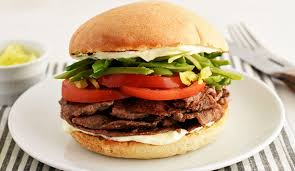
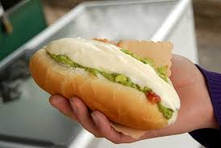
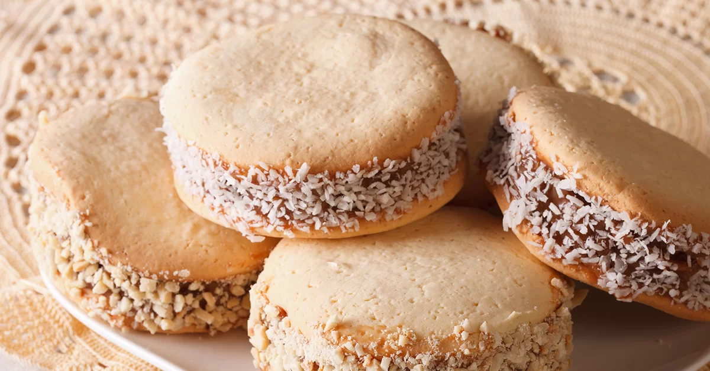
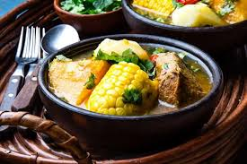
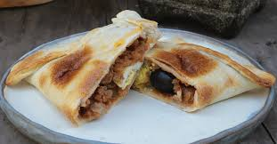
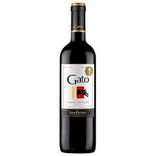
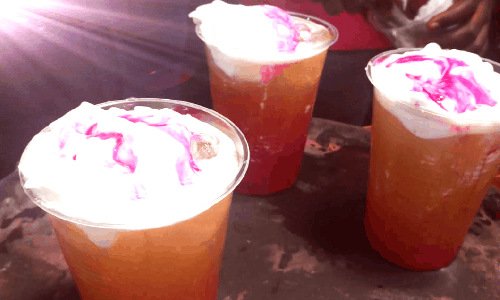

-

Barros Luco
Un clásico de la cocina chilena, el Barros Luco es un sandwich que combina carne, queso y pan, todo a la parrilla.
Precio: $5.000
-

Chacarero
Un sandwich que combina carne, porotos verdes y ají, todo en un pan crujiente. Ideal para los amantes de la comida chilena.
Precio: $4.500
-

Completo
Un sandwich chileno que combina salchicha, palta, mayonesa y chucrut. Perfecto para un día de calor.
Precio: $3.500
-

Alfajores
Un dulce tradicional chileno, el alfajor es un postre que combina dos galletas rellenas de manjar y cubiertas de chocolate.
Precio: $2.000
-

Leche Asada
Un postre chileno que combina leche, azúcar y huevos, todo horneado hasta obtener una textura cremosa y deliciosa.
Precio: $2.500
-

Mil Hojas
Un postre que combina capas de masa hojaldrada con manjar y crema, ideal para los amantes de lo dulce.
Precio: $3.000
-

Cazuela
Un plato típico chileno que combina carne, verduras y arroz, todo cocido a fuego lento para obtener un sabor delicioso.
Precio: $6.000
-

Empanada de Horno
Un plato que combina carne, papas y verduras, todo cocido al horno para obtener un sabor delicioso y una textura crujiente.
Precio: $7.000
-

Pastel de Choclo
Un plato típico chileno que combina carne, pollo y choclo, todo horneado para obtener un sabor delicioso.
Precio: $8.000
-

Gato
Un bebestible típico chileno, el Gato es una bebida que combina vino tinto y gaseosa, ideal para acompañar cualquier comida.
Precio: $1.500
-

Mote con Huesillo
Un bebestible típico chileno, el Mote con Huesillo es una bebida que combina mote de trigo y durazno, ideal para refrescarse en verano.
Precio: $1.000
-

Terremoto
Un bebestible típico chileno, el Terremoto es una bebida que combina vino pipeño, helado de piña y granadina, ideal para refrescarse en verano.
Precio: $2.500